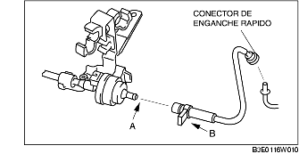

REMOCION/INSTALACION ELECTROVALVULA DE PURGA (LF)
B3E011618740W01
1. Quitar la placa de protección de los orificio de las bujías.
2. Quitar la tapa de la batería. [Véase REMOCION/INSTALACION BATERIA (LF)].
3. Desconectar el cable negativo de la batería.
4. Quitar mediante el siguiente procedimiento:
-
Advertencia
-
• No desconectar la electroválvula de purga y el tubo flexible de los vapores, excepto cuando se sustituye la electroválvula de purga, porque se puede causar pérdidas de gases. Cuando sea necesario quitar la electroválvula de purga para quitar/intalar otros componentes, desconectar la válvula en correspondencia del conector de enganche rápido.
-
(1) Desconectar el tubo flexible de los vapores en correspondencia del lado filtro de carbón activado. (Véase Detalles de instalación tubo flexible de los vapores).

-
(2) Tirar el tubo de vacío desde el colector de admisión.

5. Instalar en el orden contrario al de la remoción.
Detalles de instalación tubo flexible de los vapores
1. Instalar el tubo flexible de los vapores y la abrazadera como se muestra en la figura.